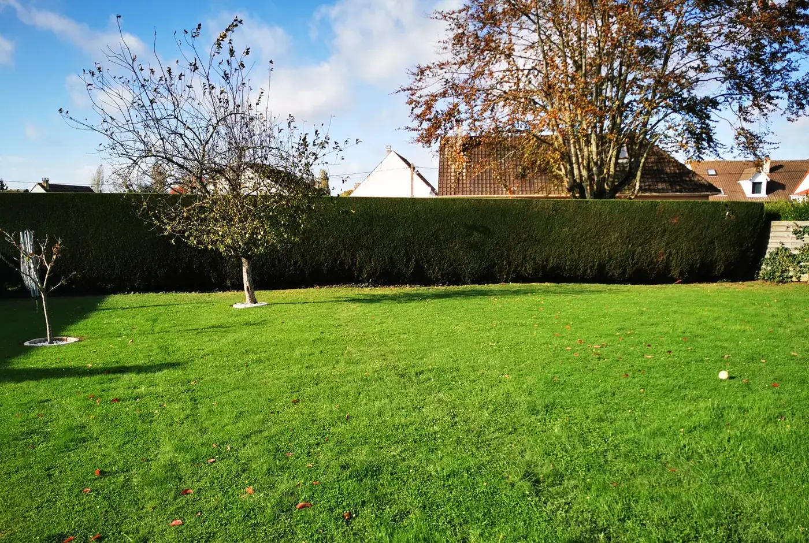
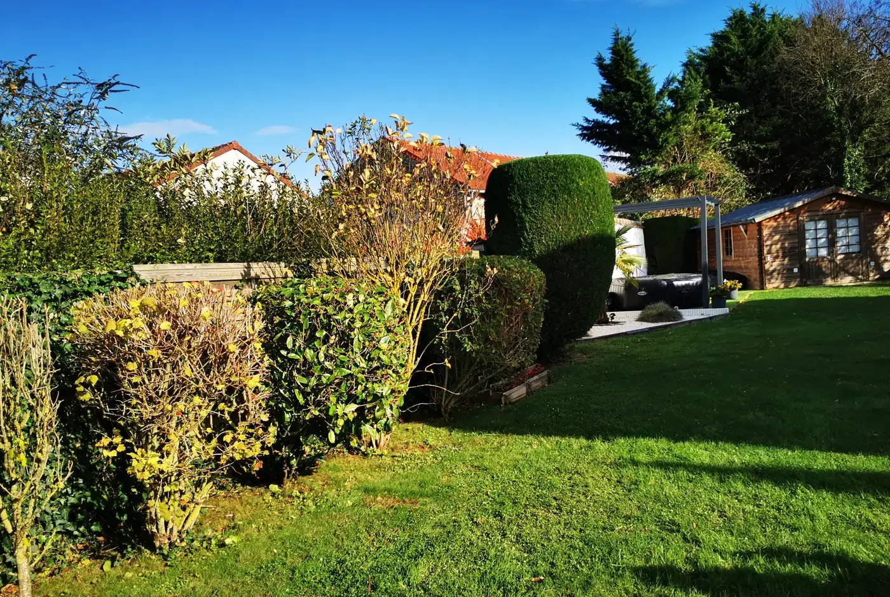
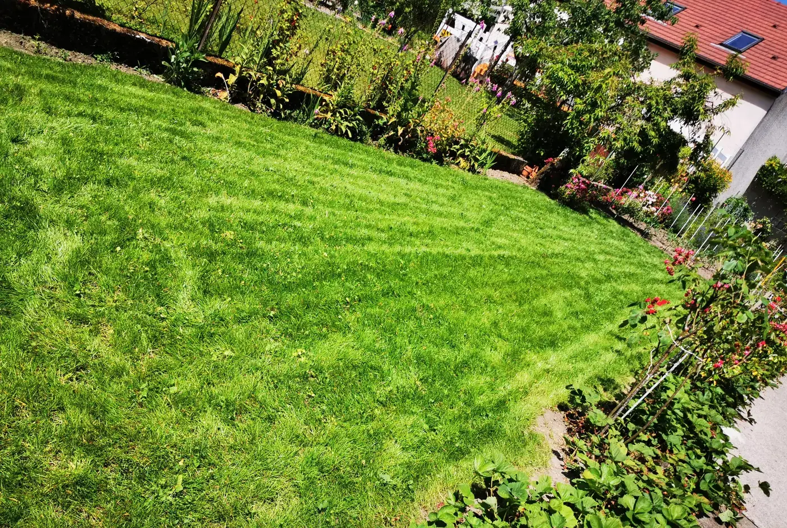
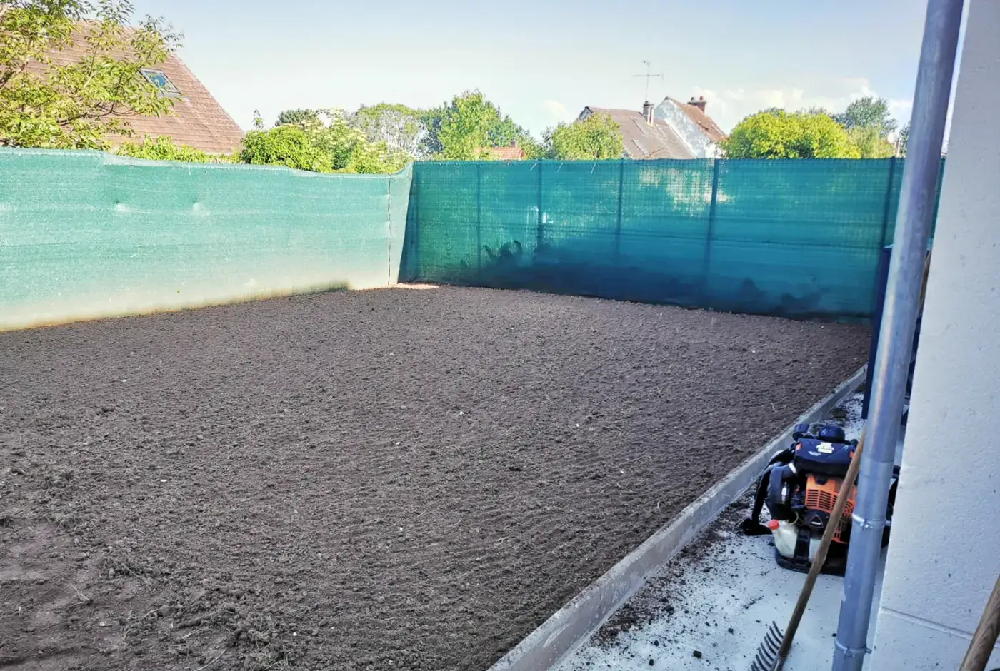
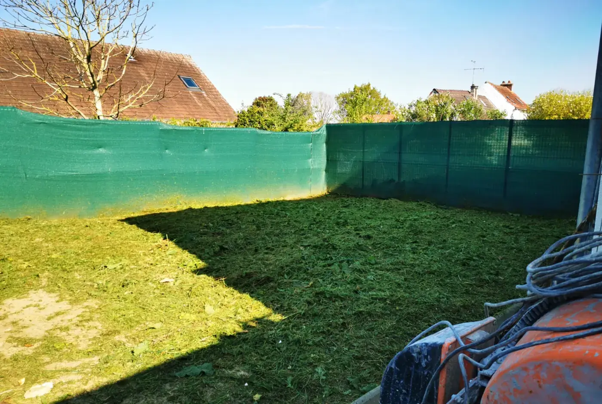

Paysagiste à Coulommiers
Votre jardin entretenu et aménagé par Essai Chaine Forge.
Votre jardin mérite mieux qu'une tonte vite faite. Création, entretien, taille : nous intervenons chez les particuliers et les professionnels dans Coulommiers et la Brie, dans un rayon de 25 km. Un devis clair avant de commencer.
- 4,8/5
- 37 avis Google
- 2011
- à votre service depuis
- Gratuit
- le devis, sans engagement
- Devis gratuit et détaillé
- Particuliers et professionnels
- Coulommiers et alentour
- 4,8/5 sur Google
- Depuis 2011
Paysagiste — création et entretien de jardins
Un jardin soigné se remarque.
Le vôtre mérite le même soin.
Installés à Coulommiers depuis 2011, nous entretenons et aménageons les jardins de la Brie pour les particuliers comme pour les copropriétés. Deux paysagistes, du matériel professionnel, et un chantier toujours rendu propre.
Faites glisser.
La transformation saute aux yeux.
De vrais chantiers, avant et après notre passage.
Déplacez le curseur pour révéler l’après.
Photos d’illustration — elles seront remplacées par vos propres chantiers.
Ce que nous faisons pour vous.
De la tonte régulière à la création complète d’un extérieur. Chaque prestation a sa page : ce qu’elle comprend, et où nous la proposons.
Entretien de jardin
Tonte, désherbage, nettoyage des massifs et évacuation des déchets verts. Au passage ou au contrat annuel.
En savoir plusTaille de haies et arbustes
Taille de formation ou de rabattage, haies de toutes hauteurs, ramassage et évacuation compris.
En savoir plusCréation de jardin
Plantations, massifs, gazon, paillage : nous dessinons et réalisons votre extérieur de A à Z.
En savoir plusTerrasses et allées
Pose de terrasses bois ou dalles, allées gravillonnées, bordures et pas japonais.
En savoir plusClôtures et portails
Pose de clôtures rigides, grillages, brise-vues et portails pour délimiter votre propriété.
En savoir plusDébroussaillage
Remise en état de terrains laissés à l'abandon, broyage des ronces et évacuation.
En savoir plusUn beau jardin ne doit rien au hasard.
Trois choses que vous pouvez attendre de nous, à chaque chantier.
-
Un devis clair
Nous passons voir votre terrain avant de chiffrer. Vous savez exactement ce qui sera fait, avant que nous commencions.
-
Un travail soigné
Des finitions nettes et du matériel adapté : votre jardin est traité avec attention, du premier coup de taille au dernier.
-
Un chantier rendu propre
Déchets verts ramassés et évacués : vous ne voyez que le résultat.
Des jardins qui respirent le travail bien fait.
Quelques chantiers récents. Chaque extérieur est différent : parlons du vôtre.





Photos d’illustration — elles seront remplacées par vos chantiers.
Ce que nos clients en disent.
Des avis laissés sur notre fiche Google, repris tels quels.
Haie de 30 mètres taillée en une journée, chantier laissé impeccable. Devis respecté au centime.
Contrat d'entretien depuis deux ans pour notre copropriété. Ponctuels, sérieux, et de bon conseil.
Création complète du jardin après notre construction. Beau résultat, un peu d'attente pour démarrer.
Avis publiés sur notre fiche Google.
Zone d’intervention
Nous intervenons dans Coulommiers et la Brie, dans un rayon de 25 km.
Basés à Coulommiers, nous nous déplaçons dans les communes alentour.
- Coulommiers
- Mouroux
- Boissy-le-Châtel
- Chauffry
- Saint-Augustin
- La Ferté-Gaucher
- Faremoutiers
- Crécy-la-Chapelle
Coulommiers et alentour
Nous trouver sur Google MapsUn projet pour votre jardin ?
Décrivez-le en quelques lignes, joignez quelques photos : nous revenons vers vous avec un devis clair.